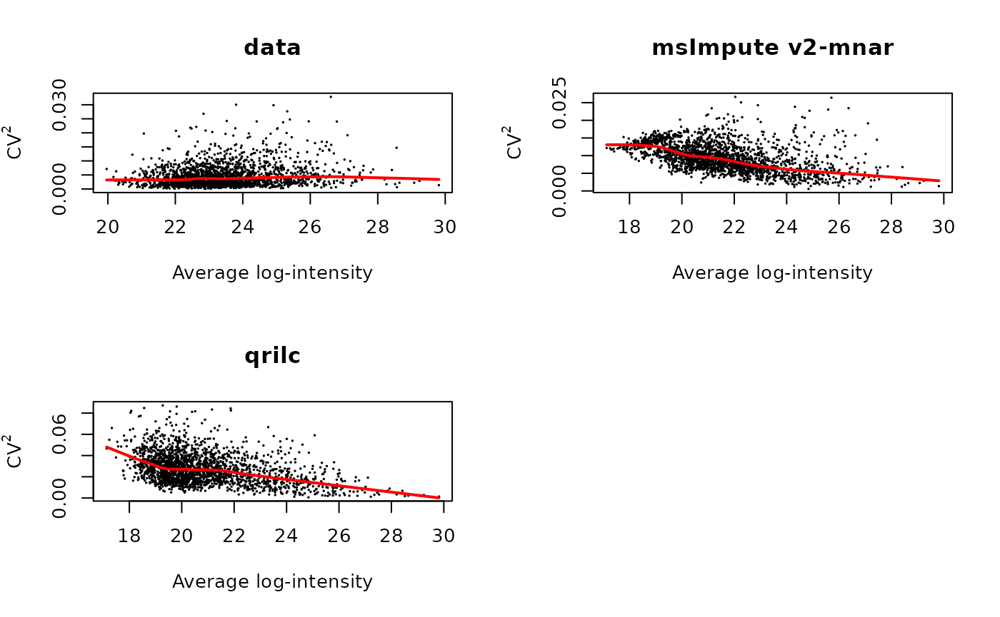
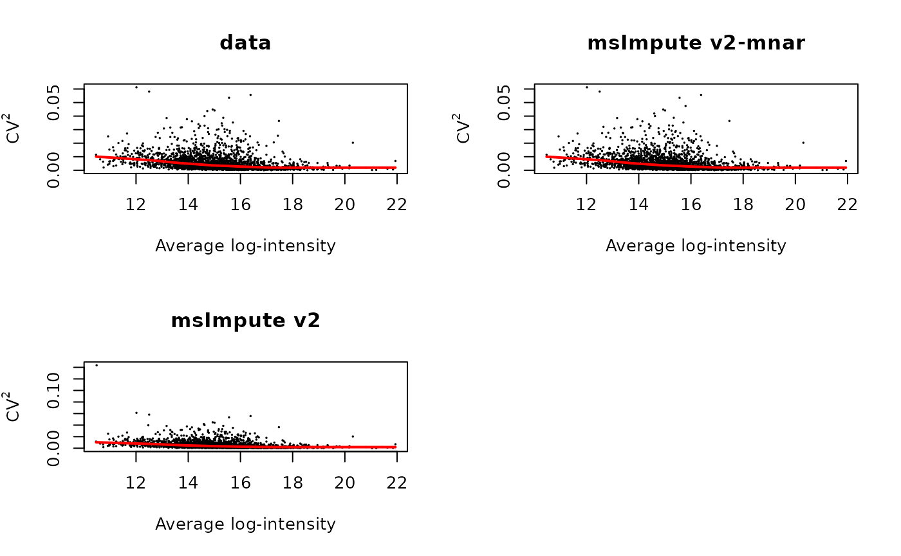

vignettes/msImpute-vignette.Rmd
msImpute-vignette.RmdAbstract
MsImpute is a package for imputation of peptide intensity in proteomics experiments. It additionally contains tools for MAR/MNAR diagnosis and assessment of distortions to the probability distribution of the data post imputation. This document covers case studies featuring data obtained by various Mass Spectrometry (MS) acquisition modes to demonstrate applications of tools implemented in the package. The datasets selected here represent data with MAR and left-censored MNAR missingness patterns. We demonstrate msImpute is able to correctly identify these patterns and inform user’s decisions in downstream analyses.
if(!requireNamespace("BiocManager", quietly = TRUE)) install.packages("BiocManager") BiocManager::install("msImpute")
The package consists of the following main functions:
selectFeatures: identifies informative peptides that can be used to examine MAR/MNAR missingness in the data.
msImpute: Main function that imputes missing values by learning a low-rank approximation of the data.
findVariableFeatures: finds peptide with high biological variance. We use this in computeStructuralMetrics
computeStructuralMetrics: returns a number of metrics that measure distortions into the data after imputation.
plotCV2: Plots the square of coefficient of variation versus average log-expression i.e. mean-\(CV^2\) plot
These functions overall are designed to inform user’s decision in choosing a proper imputation strategy. For a more detailed workflow, please see User’s Manual.
The aim is to assess the missing patterns in ion mobility data by Prianichnikov et al. (2020), available from PXD014777. The evidence table of MaxQuant output was processed as described below. Rows are Modified Peptide IDs. Charge state variations are treated as distinct peptide species. For peptides with multiple identification types, the intensity is considered to be the median of reported intensity values. Reverse complements and contaminant peptides are discarded. Peptides with more than 4 observed intensity values are retained.
The data was acquired in two batches (over two days). We are interested to know if missing values are evenly distributed across batches, or there is a batch-specific dropout trend. The runs are also labeled by S1, S2 and S4 (source unknown). The aim is to use this information to work out if missing values occur due to technical or biological effects.
library(reticulate) library(msImpute) library(limma) library(imputeLCMD) library(ComplexHeatmap)
The following procedures were applied to process the data, which we later load from the package data.
data(pxd014777) y <- pxd014777
Zero values that will be converted to Inf/-Inf after log- transformation. Check if there are valid values in the data before log transformation
table(is.infinite(data.matrix(log2(y))))
##
## FALSE TRUE
## 610515 681There are zero values that will be converted to Inf/-Inf after log- transformation. Add a small offset to avoid infinite values:
y <- log2(y+0.25)
# quantile normalisation y <- normalizeBetweenArrays(y, method = "quantile")
Determine dominant patterns of missing values by investigating the distribution of missing values. Peptides that are missing in at least one experimental group (here batch), and therefore exhibit structured missing patterns can be identified by the EBM metric implemented in selectFeatures. We then make a heatmap of their dropout pattern.
batch <- as.factor(gsub("(2018.*)_RF.*","\\1", colnames(y))) experiment <- as.factor(gsub(".*(S[1-9]).*","\\1", colnames(y))) hdp <- selectFeatures(y, method = "ebm", group = batch) # peptides missing in one or more experimental group will have a NaN EBM, which is a measure of entropy of # distribution of observed values table(is.nan(hdp$EBM))
##
## FALSE TRUE
## 2780 103# construct matrix M to capture missing entries M <- ifelse(is.na(y),1,0) M <- M[hdp$msImpute_feature,] # plot a heatmap of missingness patterns for the selected peptides
ha_column <- HeatmapAnnotation(batch = batch, experiment = experiment, col = list(batch = c('20181023' = "#B24745FF", '20181024'= "#00A1D5FF"), experiment=c("S1"="#DF8F44FF", "S2"="#374E55FF", "S4"="#79AF97FF"))) hm <- Heatmap(M, column_title = "dropout pattern, columns ordered by dropout similarity", name = "Intensity", col = c("#8FBC8F", "#FFEFDB"), show_row_names = FALSE, show_column_names = FALSE, cluster_rows = TRUE, cluster_columns = TRUE, show_column_dend = FALSE, show_row_dend = FALSE, top_annotation = ha_column, row_names_gp = gpar(fontsize = 7), column_names_gp = gpar(fontsize = 8), heatmap_legend_param = list(#direction = "horizontal", heatmap_legend_side = "bottom", labels = c("observed","missing"), legend_width = unit(6, "cm")), ) hm <- draw(hm, heatmap_legend_side = "left")
Heatmap of missing value patterns for peptides selected as informative peptides
The larger the EBM, the more scattered the missing values will be. If missing values are scattered across samples, their value can be estimated from the neighborhood, hence missing type is likely MNAR. If however, peptides are missing completely in one experimental condition, or they have much more concentrated (or dense) distributions, their EBM value will be lower. A NaN EBM suggests peptide is missing in at least one experimental group, defined by the group argument. Since there are 103 such peptides with EBM=NaN, this data has peptides that are missing not at random i.e. the missingness is batch-specific. Given that this is a technical dataset, MNAR missing here can not be biological, and reflects batch-to-batch variations, such as differences in limit of detection of MS etc. selectFeatures just enables to detect any peptides that appear to exhibit structured missing, and hence might be left-censored. you can also set method="hvp" which will select top n_features peptides with high dropout rate, defined as proportion of samples where a given peptide is missing, that are also highly expressed as the msImpute_feature in the output dataframe. If method="ebm", the features marked in msImpute_feature column will be peptides (or proteins, depending on the input expression matrix), will the ones with NaN EBM (i.e. peptides with structured missing patterns). The "hvp" method can detect missingness patterns at high abundance, whereas "ebm" is for detection of peptides (completely) missing in at least one experimental group.
The study aims to characterize the proteomic profile of extracellular vesicles isolated from the descending colon of pediatric patients with inflammatory bowel disease and control participants. The following analysis is based on the peptide table from MaxQuant output, available from PXD007959. Rows are Modified Peptide IDs. Charge state variations are treated as distinct peptide species. Reverse complements and contaminant peptides are discarded. Peptides with more than 4 observed intensity values are retained. Additionally, qualified peptides are required to map uniquely to proteins. Two of the samples with missing group annotation were excluded.
The sample descriptions can be accessed via pxd007959$samples. Intensity values are stored in pxd007959$y.
We apply cyclic loess normalisation from limma to normalise log-intensities. We have justified use of cyclic loess method in depth in the user’s guide.
y <- normalizeBetweenArrays(y, method = "cyclicloess")
# determine missing values pattern group <- sample_annot$group hdp <- selectFeatures(y, method="ebm", group = group)
# construct matrix M to capture missing entries M <- ifelse(is.na(y),1,0) M <- M[hdp$msImpute_feature,] # plot a heatmap of missingness patterns for the selected peptides ha_column <- HeatmapAnnotation(group = as.factor(sample_annot$group), col=list(group=c('Control' = "#E64B35FF", 'Mild' = "#3C5488FF", 'Moderate' = "#00A087FF", 'Severe'="#F39B7FFF"))) hm <- Heatmap(M, column_title = "dropout pattern, columns ordered by dropout similarity", name = "Intensity", col = c("#8FBC8F", "#FFEFDB"), show_row_names = FALSE, show_column_names = FALSE, cluster_rows = TRUE, cluster_columns = TRUE, show_column_dend = FALSE, show_row_dend = FALSE, top_annotation = ha_column, row_names_gp = gpar(fontsize = 7), column_names_gp = gpar(fontsize = 8), heatmap_legend_param = list(#direction = "horizontal", heatmap_legend_side = "bottom", labels = c("observed","missing"), legend_width = unit(6, "cm")), ) hm <- draw(hm, heatmap_legend_side = "left")
Dropout pattern of informative peptides
As it can be seen, samples from the control group cluster together. There is a structured, block-wise pattern of missing values in the ‘Control’ and ‘Severe’ groups. This suggests that missing in not at random. This is an example of MNAR dataset. Given this knowledge, we impute using QRILC and msImpute, setting method to v2-mnar. We then compare these methods by preservation of local (within experimental group) and global (between experimental group) similarities. Note that low-rank approximation generally works for data of MAR types. However, the algorithm implemented in v2-mnar makes it applicable to MNAR data. To make low-rank models applicable to MNAR data, we need to use it in a supervised mode, hence why we need to provide information about groups or biological/experimental condition of each sample.
# imputation y_qrilc <- impute.QRILC(y)[[1]] y_msImpute <- msImpute(y, method = "v2-mnar", group = group)
## Running msImpute version v2-mnar## rank is 12## computing lambda0 ...## lambda0 is 545.047266965271## fit the low-rank model ...## model fitted.
## Imputting missing entries ...## Imputation completedgroup <- as.factor(sample_annot$group)
If you’ve installed python, and have set up a python environment in your session, you can run this section to compute the GW distance. Please see the user’s guide for setup instructions. Note that you can still run computeStructuralMetrics by setting y=NULL, if there are no python environments setup.
Withinness, betweenness and Gromov-Wasserstein (GW) distance
computeStructuralMerics returns three metrics that can be used to compare various imputation procedures:
withinness is the sum of the squared distances between samples from the same experimental group (e.g. control, treatment, Het, WT). More specifically the similarity of the samples is measured by the distance of the (expression profile of the) sample from group centroid. This is a measure of preservation of local structures.
betweenness is the sum of the squared distances between the experimental groups, more specifically the distance between group centroids. This is a measure of preservation of global structures.
gw_dist is the Gromov-Wasserstein distance computed between Principal Components of imputed and source data. It is a measure of how well the structures are overall preserved over all principal axis of variation in the data. Hence, it captures preservation of both local and global structures. PCs of the source data are computed using highly variable peptides (i.e. peptides with high biological variance).
An ideal imputation method results in smaller withinness, larger withinness and smaller gw_dist among other imputation methods.
virtualenv_create('msImpute-reticulate') virtualenv_install("msImpute-reticulate","scipy") virtualenv_install("msImpute-reticulate","cython") virtualenv_install("msImpute-reticulate","POT") use_virtualenv("msImpute-reticulate") top.hvp <- findVariableFeatures(y) computeStructuralMetrics(y_msImpute, group, y[rownames(top.hvp)[1:50],], k = 16)
Computing GW distance using k= 16 Principal Components
$withinness
Mild Control Moderate Severe
10.39139 11.53781 10.54993 10.46477
$betweenness
[1] 11.50008
$gw_dist
[1] 0.01717915computeStructuralMetrics(y_qrilc, group, y[rownames(top.hvp)[1:50],], k = 16)
Computing GW distance using k= 16 Principal Components
$withinness
Mild Control Moderate Severe
10.34686 11.84049 10.62378 10.73958
$betweenness
[1] 11.62664
$gw_dist
[1] 0.008877501Withinness tends to be smaller by msImpute, which indicates that local structures are better preserved by these two methods. The gw_dist over all PCs for the two methods is very similar (rounded to 2 decimals). This suggests the enhancements in v2-mnar is just as good as left-censored MNAR methods such as QRILC. Note that k is set to the number of samples to capture all dimensions of the data.
Also note that that, unlike QRILC, msImpute v2-mnar dose not drastically increase the variance of peptides (measured by squared coefficient of variation) post imputation.
par(mfrow=c(2,2)) pcv <- plotCV2(y, main = "data") pcv <- plotCV2(y_msImpute, main = "msImpute v2-mnar") pcv <- plotCV2(y_qrilc, main = "qrilc")

This study investigates the proteomic alterations in bone marrow neutrophils isolated from 5-8 week old Gfi1+/-, Gfi1K403R/-, Gfi1R412X/-, and Gfi1R412X/R412X mice using the SWATH-MS technique. This dataset consists of 13 DIA (for SWATH) runs on a TripleTOF 5600 plus (SCIEX). Data available from PXD010943. Peak areas extracted from 13DIAs_SWATHprocessing_area_score_FDR_observedRT.xlsx.1
Rows are peptides. Charge state variations are treated as distinct peptide species. Peptides with more than 4 observed intensity values are retained.
We normalize using quantile normalization.
data(pxd010943) y <- pxd010943 # no problematic values for log- transformation table(is.infinite(data.matrix(log2(y))))
##
## FALSE
## 30641y <- log2(y) y <- normalizeBetweenArrays(y, method = "quantile")
## [1] Gfi1 Gfi1 Gfi1 Gfi1 R412Xhet R412Xhet R412Xhet
## [8] R412Xhet R412Xhomo R412Xhomo K403R K403R K403R
## Levels: Gfi1 K403R R412Xhet R412Xhomohdp <- selectFeatures(y, method = "ebm", group = group) table(hdp$msImpute_feature)
##
## FALSE TRUE
## 2340 17##
## FALSE TRUE
## 2340 17table(complete.cases(y))
##
## FALSE TRUE
## 182 2175A very small number of peptides (17) tend to be missing in at least one experimental group.
# construct matrix M to capture missing entries M <- ifelse(is.na(y),1,0) M <- M[hdp$msImpute_feature,] # plot a heatmap of missingness patterns for the selected peptides ha_column <- HeatmapAnnotation(group = group) hm <- Heatmap(M, column_title = "dropout pattern, columns ordered by dropout similarity", name = "Intensity", col = c("#8FBC8F", "#FFEFDB"), show_row_names = FALSE, show_column_names = FALSE, cluster_rows = TRUE, cluster_columns = TRUE, show_column_dend = FALSE, show_row_dend = FALSE, top_annotation = ha_column, row_names_gp = gpar(fontsize = 7), column_names_gp = gpar(fontsize = 8), heatmap_legend_param = list(#direction = "horizontal", heatmap_legend_side = "bottom", labels = c("observed","missing"), legend_width = unit(6, "cm")), ) hm <- draw(hm, heatmap_legend_side = "left")
Dropout pattern of informative peptides
It can be seen that peptides with structured missing tend to come from the R412Xhomo group. Given that a very small number of missing peptides exhibit structured missing out of total number of partially observed peptides (17/182), we try both method="v2-mnar" (default, for MNAR data) and method="v2" (for MAR data) and compare structural metrics:
y_msImpute_mar <- msImpute(y, method = "v2") # no need to specify group if data is MAR.
## Running msImpute version v2## rank is 3## computing lambda0 ...## lambda0 is 41.6024033439951## fit the low-rank model ...## model fitted.
## Imputting missing entries ...## Imputation completedy_msImpute_mnar <- msImpute(y, method = "v2-mnar", group = group)
## Running msImpute version v2-mnar## rank is 3## computing lambda0 ...## lambda0 is 41.6024033439951## fit the low-rank model ...## model fitted.
## Imputting missing entries ...## Imputation completedIn this example, we do not compute gw_dist and only rely on withinness and betweenness metrics to assess imputation.
computeStructuralMetrics(y_msImpute_mar, group, y=NULL)
## $withinness
## Gfi1 R412Xhet R412Xhomo K403R
## 8.894406 9.148477 7.257921 6.446894
##
## $betweenness
## [1] 9.889743computeStructuralMetrics(y_msImpute_mnar, group, y = NULL)
## $withinness
## Gfi1 R412Xhet R412Xhomo K403R
## 8.901785 9.154337 7.262805 6.447030
##
## $betweenness
## [1] 9.902059There do not appear to be substantial difference between the two methods.
Additionally, both of the method preserve variations in the data well:
par(mfrow=c(2,2)) pcv <- plotCV2(y, main = "data") pcv <- plotCV2(y_msImpute_mnar, main = "msImpute v2-mnar") pcv <- plotCV2(y_msImpute_mar, main = "msImpute v2")

Prianichnikov, N., Koch, H., Koch, S., Lubeck, M., Heilig, R., Brehmer, S., Fischer, R., & Cox, J. (2020). MaxQuant Software for Ion Mobility Enhanced Shotgun Proteomics. Molecular & cellular proteomics : MCP, 19(6), 1058–1069. https://doi.org/10.1074/mcp.TIR119.001720
Zhang, X., Deeke, S.A., Ning, Z. et al. Metaproteomics reveals associations between microbiome and intestinal extracellular vesicle proteins in pediatric inflammatory bowel disease. Nat Commun 9, 2873 (2018). https://doi.org/10.1038/s41467-018-05357-4
Muench, D.E., Olsson, A., Ferchen, K. et al. Mouse models of neutropenia reveal progenitor-stage-specific defects. Nature 582, 109–114 (2020). https://doi.org/10.1038/s41586-020-2227-7
## R version 4.0.3 Patched (2020-10-13 r79342)
## Platform: x86_64-pc-linux-gnu (64-bit)
## Running under: Ubuntu 20.04.1 LTS
##
## Matrix products: default
## BLAS/LAPACK: /usr/lib/x86_64-linux-gnu/openblas-pthread/libopenblasp-r0.3.8.so
##
## locale:
## [1] LC_CTYPE=en_US.UTF-8 LC_NUMERIC=C
## [3] LC_TIME=en_US.UTF-8 LC_COLLATE=en_US.UTF-8
## [5] LC_MONETARY=en_US.UTF-8 LC_MESSAGES=C
## [7] LC_PAPER=en_US.UTF-8 LC_NAME=C
## [9] LC_ADDRESS=C LC_TELEPHONE=C
## [11] LC_MEASUREMENT=en_US.UTF-8 LC_IDENTIFICATION=C
##
## attached base packages:
## [1] grid parallel stats4 stats graphics grDevices utils
## [8] datasets methods base
##
## other attached packages:
## [1] ComplexHeatmap_2.5.6 imputeLCMD_2.0 impute_1.63.0
## [4] pcaMethods_1.81.0 Biobase_2.49.1 BiocGenerics_0.35.4
## [7] norm_1.0-9.5 tmvtnorm_1.4-10 gmm_1.6-5
## [10] sandwich_3.0-0 Matrix_1.2-18 mvtnorm_1.1-1
## [13] limma_3.45.19 msImpute_0.99.25 reticulate_1.16
## [16] BiocStyle_2.17.1
##
## loaded via a namespace (and not attached):
## [1] bitops_1.0-6 matrixStats_0.57.0
## [3] fs_1.5.0 RColorBrewer_1.1-2
## [5] rprojroot_1.3-2 GenomeInfoDb_1.25.11
## [7] tools_4.0.3 backports_1.1.10
## [9] R6_2.4.1 irlba_2.3.3
## [11] colorspace_1.4-1 GetoptLong_1.0.3
## [13] compiler_4.0.3 textshaping_0.1.2
## [15] BiocNeighbors_1.7.0 desc_1.2.0
## [17] DelayedArray_0.15.16 bookdown_0.20
## [19] pkgdown_1.6.1.9000 systemfonts_0.3.2
## [21] stringr_1.4.0 digest_0.6.25
## [23] rmarkdown_2.4 XVector_0.29.3
## [25] pkgconfig_2.0.3 htmltools_0.5.0
## [27] sparseMatrixStats_1.1.11 MatrixGenerics_1.1.8
## [29] highr_0.8 pdist_1.2
## [31] rlang_0.4.8 GlobalOptions_0.1.2
## [33] DelayedMatrixStats_1.11.5 shape_1.4.5
## [35] zoo_1.8-8 jsonlite_1.7.1
## [37] BiocParallel_1.23.3 RCurl_1.98-1.2
## [39] magrittr_1.5 BiocSingular_1.5.2
## [41] GenomeInfoDbData_1.2.4 scuttle_0.99.21
## [43] Rcpp_1.0.5 S4Vectors_0.27.14
## [45] stringi_1.5.3 yaml_2.2.1
## [47] edgeR_3.31.6 SummarizedExperiment_1.19.9
## [49] zlibbioc_1.35.0 dqrng_0.2.1
## [51] crayon_1.3.4 lattice_0.20-41
## [53] beachmat_2.5.8 circlize_0.4.10
## [55] locfit_1.5-9.4 knitr_1.30
## [57] igraph_1.2.6 GenomicRanges_1.41.6
## [59] rdetools_1.0 rjson_0.2.20
## [61] softImpute_1.4 evaluate_0.14
## [63] data.table_1.13.0 scran_1.17.25
## [65] BiocManager_1.30.10 png_0.1-7
## [67] clue_0.3-57 assertthat_0.2.1
## [69] xfun_0.18 rsvd_1.0.3
## [71] ragg_0.4.0 SingleCellExperiment_1.11.9
## [73] memoise_1.1.0 IRanges_2.23.10
## [75] cluster_2.1.0 bluster_0.99.2
## [77] statmod_1.4.34Accessible via ProteomXchange↩︎